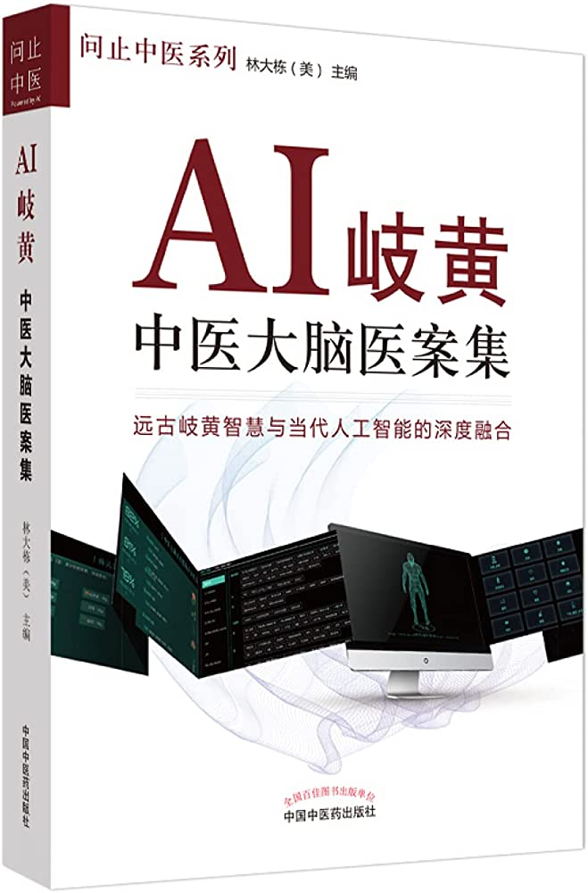

AI岐黃：中醫大腦醫案集

洞明醫理，活用經方，歷來是學習中醫的正路。但是，經方之理很深，眾醫解說紛紜，初學者不僅難以把握，反倒有誤入歧途之憂，而采取方證對應是比較切實的捷徑，可以快速獲取較好的臨床療效。不過，很多中醫生對經方並不熟悉，鑑於此，就有了《AI岐黃——中醫大腦醫案集》這本書。本書講述了幾十個案例，都是利用人工智能對經方進行解讀，抓取主證建立經方數據庫，利用特殊算法與臨床證候聯系起來，再由計算機給出基本推薦方，醫生在此基礎上加減。由於計算機具有精確記憶，海量數據，迭代進步的優勢，隨著時間的推移，數據積累越來越多，療效也會越來越好，結合人腦擅長模糊抽象思考的優勢，對中醫學的未來意義巨大，雖短期內難以達到國醫大師的水平，但作為臨床中醫師的有力工具是完全沒問題的。作為中醫的一個嶄新發展方向，人工智能中醫具有極大潛力，也是大力推廣中醫比較務實的一種方式，比現在那些照著藥物說明書開中成藥的醫師強了太多。
|